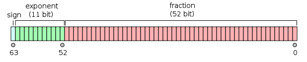

C语言 变量
变量其实只不过是程序可操作的存储区的名称。C 中每个变量都有特定的类型，类型决定了变量存储的大小和布局，该范围内的值都可以存储在内存中，运算符可应用于变量上。
变量的名称可以由字母、数字和下划线字符组成。它必须以字母或下划线开头。大写字母和小写字母是不同的，因为 C 是大小写敏感的。基于前一章讲解的基本类型，有以下几种基本的变量类型：
| 类型 | 描述 |
|---|---|
| char | 通常是一个字节（八位）。这是一个整数类型。 |
| int | 对机器而言，整数的最自然的大小。 |
| float | 单精度浮点值。单精度是这样的格式，1位符号，8位指数，23位小数。 |
| double | 双精度浮点值。双精度是1位符号，11位指数，52位小数。 |
| void | 表示类型的缺失。 |
C 语言也允许定义各种其他类型的变量，比如枚举、指针、数组、结构、共用体等等，这将会在后续的章节中进行讲解，本章节我们先讲解基本变量类型。
C语言 中的变量定义
变量定义就是告诉编译器在何处创建变量的存储，以及如何创建变量的存储。变量定义指定一个数据类型，并包含了该类型的一个或多个变量的列表，如下所示：
type variable_list;
在这里，type 必须是一个有效的 C 数据类型，可以是 char、w_char、int、float、double 或任何用户自定义的对象，variable_list 可以由一个或多个标识符名称组成，多个标识符之间用逗号分隔。下面列出几个有效的声明：
int i, j, k;
char c, ch;
float f, salary;
double d;
行 int i, j, k; 声明并定义了变量 i、j 和 k，这指示编译器创建类型为 int 的名为 i、j、k 的变量。
变量可以在声明的时候被初始化（指定一个初始值）。初始化器由一个等号，后跟一个常量表达式组成，如下所示：
type variable_name = value;
下面列举几个实例：
extern int d = 3, f = 5; // d 和 f 的声明与初始化
int d = 3, f = 5; // 定义并初始化 d 和 f
byte z = 22; // 定义并初始化 z
char x = 'x'; // 变量 x 的值为 'x'
不带初始化的定义：带有静态存储持续时间的变量会被隐式初始化为 NULL（所有字节的值都是 0），其他所有变量的初始值是未定义的。
C 中的变量声明
变量声明向编译器保证变量以指定的类型和名称存在，这样编译器在不需要知道变量完整细节的情况下也能继续进一步的编译。变量声明只在编译时有它的意义，在程序连接时编译器需要实际的变量声明。
变量的声明有两种情况：
- 1、一种是需要建立存储空间的。例如：int a 在声明的时候就已经建立了存储空间。
- 2、另一种是不需要建立存储空间的，通过使用extern关键字声明变量名而不定义它。 例如：extern int a 其中变量 a 可以在别的文件中定义的。
- 除非有extern关键字，否则都是变量的定义。
extern int i; //声明，不是定义
int i; //声明，也是定义
实例
尝试下面的实例，其中，变量在头部就已经被声明，但是定义与初始化在主函数内：
实例
文件名:variable-declear.c
#include <stdio.h>
// 函数外定义变量 x 和 y
int x;
int y;
int addtwonum()
{
// 函数内声明变量 x 和 y 为外部变量
extern int x;
extern int y;
// 给外部变量（全局变量）x 和 y 赋值
x = 1;
y = 2;
return x+y;
}
int main()
{
int result;
// 调用函数 addtwonum
result = addtwonum();
printf("result 为: %d",result);
return 0;
}
gcc /share/lesson/c/variable-declear.c && ./a.out
康康
如果需要在一个源文件中引用另外一个源文件中定义的变量，我们只需在引用的文件中将变量加上 extern 关键字的声明即可。
文件名:addnumber.c
#include <stdio.h>
/*外部变量声明*/
extern int x ;
extern int y ;
int addnumber()
{
return x+y;
}
文件名:test.c
#include <stdio.h>
/*定义两个全局变量*/
int x=1;
int y=2;
int addnumber();
int main(void)
{
int result;
result = addnumber();
printf("result 为: %d\n",result);
return 0;
}
gcc /share/lesson/c/addnumber.c /share/lesson/c/test.c -o main && ./main
康康
C语言中的左值(Lvalues)和右值(Rvalues)
C 中有两种类型的表达式：
- 左值（lvalue）：指向内存位置的表达式被称为左值（lvalue）表达式。左值可以出现在赋值号的左边或右边。
- 右值（rvalue）：术语右值（rvalue）指的是存储在内存中某些地址的数值。右值是不能对其进行赋值的表达式，也就是说，右值可以出现在赋值号的右边，但不能出现在赋值号的左边。
变量是左值，因此可以出现在赋值号的左边。数值型的字面值是右值，因此不能被赋值，不能出现在赋值号的左边。下面是一个有效的语句：
int g = 20;
但是下面这个就不是一个有效的语句，会生成编译时错误：
10 = 20;